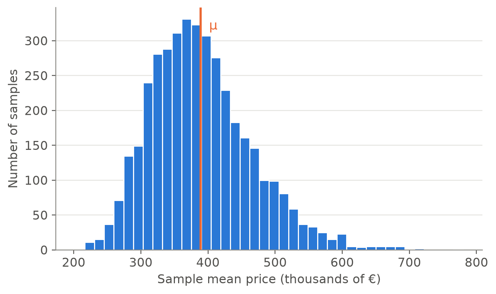
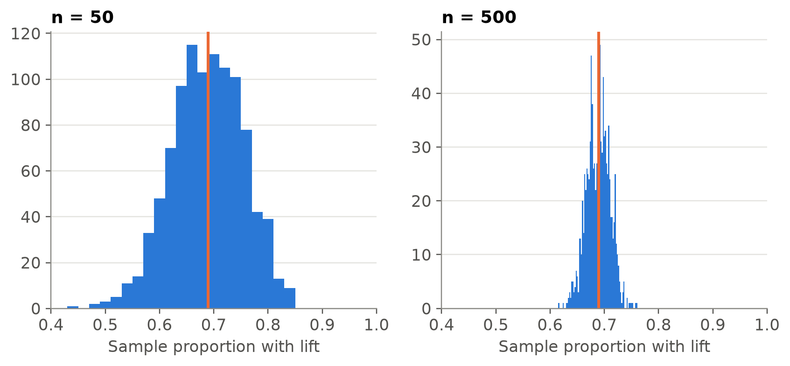

flowchart LR
P["Population<br/>(unknown parameters)"] -- "sampling<br/>(probability)" --> M["Sample<br/>(observed data)"]
M -- "descriptive<br/>statistics" --> R["Summaries<br/>(statistics)"]
R -- "statistical<br/>inference" --> P
1.1 Statistics, populations and samples
TipLearning outcomes
After this topic you should be able to:
- Explain what statistics studies and distinguish descriptive statistics from statistical inference.
- Identify, in a concrete problem, the population, the individuals, the subpopulations and the sample.
- Distinguish between a parameter and a statistic, and understand why a statistic changes from one sample to another.
- Classify a variable by its type and measurement scale, and know which summaries make sense for each one (part 2 of this topic).
What is statistics?
Many everyday questions are about groups that are too large to be observed completely, or about things that vary from one case to another. How much does a flat cost in Madrid? Is it much more expensive in the centre than in the outskirts? Have house prices gone up this year? None of these questions can be answered with a single observation. We have to collect data, summarise them and draw conclusions, and say how sure we are of those conclusions.
NoteDefinition
Statistics is the discipline that studies how to collect, organise, summarise and analyse data, and how to draw conclusions and make decisions from them under uncertainty.
Two ideas in this definition are essential:
- Variability. If all flats had the same price, looking at one would be enough. Statistics exists because individuals differ. What it studies is not each individual but the distribution of a characteristic in a group: how many flats cost less than 200,000 €, which prices are typical, how different they are.
- Uncertainty. We rarely observe the whole group. Conclusions drawn from a part of it can be wrong, and statistics tells us by how much.
Branches of statistics
- Descriptive statistics summarises and displays the observed data with tables, graphs and a few numbers. Its conclusions refer only to the data at hand. It is the subject of this course.
- Statistical inference uses the data of a sample to draw conclusions about the population it comes from, together with a measure of their reliability.
- Probability is the language that connects both: it describes how samples are generated, and so how much they can differ from the population.
Every data analysis begins, and often ends, with a careful description of the data.
Statistics in practice
- Official statistics. The unemployment rate published by the Spanish National Statistics Institute (INE) comes from the Labour Force Survey, which interviews a sample of households every quarter. The INE housing price index is computed from the sales registered by notaries.
- Economics and business. Banks value dwellings before granting a mortgage, and property portals estimate prices from the characteristics of similar dwellings.
- Health. Clinical trials compare treatments on samples of patients.
- Engineering. Quality control checks samples of products from a production line.
- Public policy. Does a rent subsidy help young people leave their parents’ home? Answering requires comparing groups and separating the effect of the policy from random variability.
Our data: dwellings for sale in Madrid
Throughout the course we use real data: the listings of dwellings for sale in the city of Madrid published on the property portal idealista in 2018 (Rey-Blanco et al. 2024). Each row is a dwelling advertised for sale, with its asking price, its size, its location and its features (lift, terrace, condition…). The data are described in data/processed/idealista/README.md.
listings = pl.read_csv("data/processed/idealista/madrid_listings_2018.csv")
listings.select("district", "price", "area_m2", "bedrooms", "lift").head()| district | price | area_m2 | bedrooms | lift |
|---|---|---|---|---|
| Hortaleza | 255,000.0 | 97 | 3 | True |
| Puente de Vallecas | 82,000.0 | 62 | 2 | True |
| Puente de Vallecas | 133,000.0 | 67 | 3 | False |
| Ciudad Lineal | 204,000.0 | 180 | 3 | True |
| Carabanchel | 161,000.0 | 54 | 2 | False |
print(f"Number of listings: {listings.height:,}")Number of listings: 75,735Populations, individuals and samples
Population and individuals
NoteDefinition
- Population: the set of all the elements we want to study. Its number of elements, the population size, is denoted by \(N\).
- Individual (or statistical unit): each element of the population.
Individuals need not be people: they can be dwellings, households, firms, municipalities or months. Defining the population precisely is the first step of any study, and requires saying who, where and when.
TipExample: what exactly do our data describe?
Our individuals are listings: dwellings advertised for sale in the city of Madrid on one portal during 2018. This is not the same as “the dwellings of Madrid” (most of them were not for sale) or “the dwellings sold in Madrid” (some listings were never sold, and many sales are not advertised on that portal). The prices are asking prices chosen by the sellers, usually higher than the price finally agreed. Every conclusion we draw refers to the population of listings, not to the others.
Subpopulations
NoteDefinition
A subpopulation is a subset of the population defined by a characteristic of its individuals.
Subpopulations allow us to study differences within the population: the listings of the Salamanca district, those with a terrace, or the newly built ones. When the population is divided into disjoint subpopulations that cover it completely (for example, the 21 districts of Madrid), they are called strata.
Census and sample
NoteDefinition
- Census: a study in which all the individuals of the population are observed.
- Sample: the subset of the population that is actually observed. Its number of elements, the sample size, is denoted by \(n\).
Why not always observe the whole population?
- Cost and time. Visiting and valuing every dwelling of Madrid would take years. A well-chosen sample gives precise results for a fraction of the cost.
- Populations that cannot be listed. The buyers a developer will have next year do not exist yet.
- Destructive tests. To check how long a battery lasts, it has to be run down.
- Quality. A careful survey of a sample can contain fewer errors than a hasty census.
Representative samples and random sampling
A sample is useful only if it is representative: its composition resembles that of the population, apart from differences due to chance. The way to guarantee this is to choose it at random.
NoteDefinition
A simple random sample (without replacement) of size \(n\) from a population of size \(N\) is a sample chosen so that each of the \(\binom{N}{n}\) possible groups of \(n\) individuals has the same probability, \(1 / \binom{N}{n}\), of being selected.
In a simple random sample of size \(n\), every individual has probability \(n/N\) of being in the sample.
Official surveys use more elaborate random designs (for example, choosing municipalities first and then households within them), but the principle is the same: chance decides who is in the sample, not the researcher or the respondent.
NoteHistorical note: the Literary Digest poll (1936)
Before the 1936 US presidential election, the magazine Literary Digest mailed about 10 million ballots and received some 2.4 million replies. It predicted a clear victory for Alf Landon, but Franklin D. Roosevelt won by a landslide. The addresses came largely from lists of telephone subscribers and car owners, people with above-average income during the Great Depression, and only the most motivated replied (Squire 1988). The same year, George Gallup predicted Roosevelt’s victory with a much smaller sample chosen to mirror the electorate.
A huge but biased sample does not correct its bias. A small but random sample allows reliable conclusions.
Other common biases in real data:
- Non-response: people who do not answer a survey may differ from those who do.
- Survivorship: studying only the shops that are still open overstates how well shops do.
- Self-selection: an online poll collects the opinion of those who decide to take part. Our listings are self-selected too: they are the dwellings whose owners chose to sell, and to advertise them on that portal.
Parameters and statistics
NoteDefinition
- A parameter is a number that describes the population. It is fixed, but usually unknown.
- A statistic is a number computed from the data of a sample. It is known once the sample has been observed, but it changes from one sample to another.
We use Greek letters for parameters and Latin letters for statistics:
| Quantity | Population (parameter) | Sample (statistic) |
|---|---|---|
| Size | \(N\) | \(n\) |
| Mean | \(\mu = \dfrac{1}{N}\displaystyle\sum_{i=1}^{N} x_i\) | \(\bar{x} = \dfrac{1}{n}\displaystyle\sum_{i=1}^{n} x_i\) |
| Variance | \(\sigma^2\) | \(s^2\) |
| Proportion | \(p\) | \(\hat{p}\) |
Let us see the difference with an experiment. Suppose, for illustration only, that the 75,735 listings are the whole population. Then the mean asking price of all of them is a parameter, \(\mu\), which we can compute exactly:
population = listings
mu = population["price"].mean()
print(f"N = {population.height:,} listings · μ = {mu:,.0f} €")N = 75,735 listings · μ = 388,892 €Now we draw five simple random samples of \(n = 30\) listings and compute the mean price \(\bar{x}\) of each one:
means = [
population.sample(n=30, seed=seed)["price"].mean()
for seed in range(5)
]
pl.DataFrame({"sample": range(1, 6), "sample mean (€)": means})| sample | sample mean (€) |
|---|---|
| 1 | 388,066.7 |
| 2 | 470,133.3 |
| 3 | 487,300.0 |
| 4 | 446,166.7 |
| 5 | 332,300.0 |
Each sample gives a different \(\bar{x}\), and none of them equals \(\mu\). If we repeat the experiment many times we can see how the statistic is distributed:
rng = np.random.default_rng(1)
prices = population["price"].to_numpy()
means = np.array([rng.choice(prices, size=30, replace=False).mean() for _ in range(4_000)])
fig, ax = plt.subplots()
ax.hist(means / 1000, bins=40, color=COLORS["blue"], edgecolor="white", linewidth=1)
ax.axvline(mu / 1000, color=COLORS["orange"], linewidth=2)
ax.text(mu / 1000, ax.get_ylim()[1] * 0.95, " μ", color=COLORS["orange"],
va="top", fontsize=12)
ax.set_xlabel("Sample mean price (thousands of €)")
ax.set_ylabel("Number of samples")
plt.show()
print(f"Mean of the 2,000 sample means: {means.mean():,.0f} € (μ = {mu:,.0f} €)")
print(f"Share of samples whose mean is more than 50,000 € away from μ: "
f"{np.mean(np.abs(means - mu) > 50_000):.0%}")
Mean of the 2,000 sample means: 389,623 € (μ = 388,892 €)
Share of samples whose mean is more than 50,000 € away from μ: 50%Figure 2 anticipates the main ideas of statistical inference:
- The statistic \(\bar{x}\) depends on the sample that chance has selected.
- Its values are centred on the parameter \(\mu\): the mean of the 2,000 sample means is very close to it, so there is no systematic error. (The histogram is still somewhat skewed to the right, like the prices themselves; with larger samples it becomes symmetric.)
- Its spread is the sampling error. With samples of 30 flats it is large, because prices vary a lot from one flat to another; it decreases as \(n\) grows (Exercise 4).
CautionWhy is this only an illustration?
In practice we never know \(\mu\): if we could compute it, we would not need a sample. Here we have treated the data as a population in order to compare the statistic with the parameter, which is impossible in a real study.
Subpopulations have their own parameters, for example the mean price in the centre (the seven districts inside the M-30 ring road) and in the periphery:
(
population
.group_by("zone")
.agg(N=pl.len(), mean_price=pl.col("price").mean())
.sort("mean_price", descending=True)
)| zone | N | mean_price |
|---|---|---|
| Centre | 36,176 | 545,208.4 |
| Periphery | 39,559 | 245,943.7 |
Exercises
Exercise 1 (Population, sample and parameter) A supermarket chain wants to know the mean amount spent per purchase in its stores in the Madrid region during March. It records the amount of 1,200 receipts chosen at random among all those issued that month in the region.
- Identify the population, the individual, the sample and the sizes \(N\) and \(n\) (if known).
- What is the parameter of interest? Which statistic would you use to estimate it?
- The firm wants to compare the stores in the city of Madrid with those in the rest of the region. Which concept describes these two groups?
TipSolution
Population: all the receipts issued in March in the chain’s stores in the Madrid region. Individual: each receipt, that is, each purchase (not each customer). Sample: the 1,200 selected receipts, so \(n = 1\,200\). \(N\) is the total number of receipts of the month: the firm knows it, although it is not given.
Parameter: the mean amount per purchase in the population, \(\mu\). Statistic: the mean \(\bar{x}\) of the 1,200 amounts in the sample.
They are two subpopulations. Since they do not overlap and together cover the whole population, they are strata.
Exercise 2 (An online poll) A property website reports that “62 % of Spaniards think now is a bad time to buy a house”, according to a poll answered by 25,000 visitors to the site. Can this result be generalised to the Spanish population? Would it help if 250,000 visitors had answered?
TipSolution
It cannot be generalised. The sample is not random but self-selected: it is made of visitors to a property website (people who are probably thinking about buying or selling) who decided to answer. Nothing guarantees that they resemble the population. More answers do not help: as with the Literary Digest, a larger sample with the same bias only estimates the wrong quantity more precisely.
Exercise 3 (What do the data describe?) A newspaper uses our data to write: “In 2018 a flat in Madrid cost on average about 390,000 €”. Point out two reasons why this sentence may not describe correctly the prices paid for dwellings in Madrid in 2018.
TipSolution
- The prices are asking prices, not the prices finally paid, which are usually lower after negotiation.
- The individuals are listings on one portal, not sales. Dwellings that are expensive or hard to sell may stay on the market and be over-represented, and sales made without that portal are missing.
A third point, studied in Topic 2: the mean is pulled up by a few very expensive dwellings, so a “typical” flat costs less than the mean (the median is 257,000 €).
Exercise 4 (Sampling variability of a proportion (with Python)) Treating again the listings as if they were the population:
- Compute the population proportion \(p\) of listings in a building with a lift.
- Draw 1,000 simple random samples of size \(n = 50\) and compute the sample proportion \(\hat{p}\) in each one. Draw their histogram together with \(p\).
- Repeat b) with \(n = 500\). What changes?
TipSolution
lift = population["lift"].to_numpy()
p = lift.mean()
rng = np.random.default_rng(2026)
fig, axes = plt.subplots(1, 2, figsize=(9, 3.5), sharex=True)
for ax, n in zip(axes, [50, 500]):
p_hat = [rng.choice(lift, size=n, replace=False).mean() for _ in range(1_000)]
edges = (np.arange(n + 2) - 0.5) / n # p_hat only takes the values k/n: one bar per value
ax.hist(p_hat, bins=edges, color=COLORS["blue"])
ax.set_xlim(0.4, 1)
ax.axvline(p, color=COLORS["orange"], linewidth=2)
ax.set_title(f"n = {n}")
ax.set_xlabel("Sample proportion with lift")
print(f"n = {n:>3}: standard deviation of the 1,000 values of p_hat = {np.std(p_hat):.3f}")
plt.show()
print(f"Population proportion p = {p:.3f}")n = 50: standard deviation of the 1,000 values of p_hat = 0.066
n = 500: standard deviation of the 1,000 values of p_hat = 0.021
Population proportion p = 0.689Both histograms are centred on \(p\), but with \(n = 500\) the sample proportions are much closer to it: the sampling error decreases as the sample size increases.
References
Rey-Blanco, David, Pelayo Arbués, Fernando A. López, and Antonio Páez. 2024. “Using Machine Learning to Identify Spatial Market Segments. A Reproducible Study of Major Spanish Markets.” Environment and Planning B: Urban Analytics and City Science 51 (1): 89–108. https://doi.org/10.1177/23998083231166952.
Squire, Peverill. 1988. “Why the 1936 Literary Digest Poll Failed.” Public Opinion Quarterly 52 (1): 125–33.